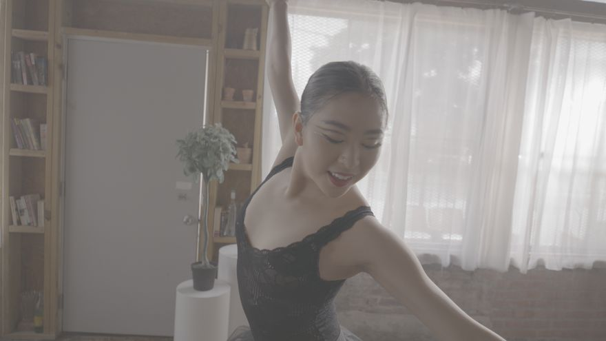
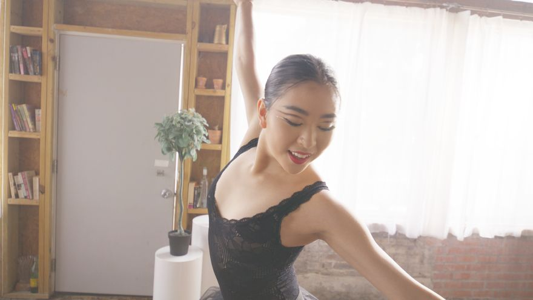
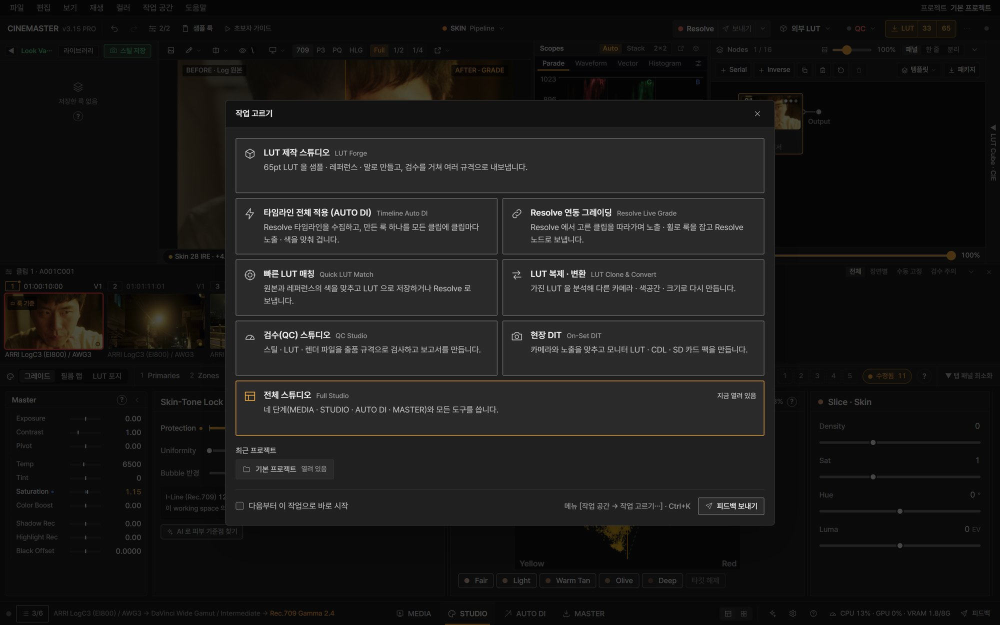
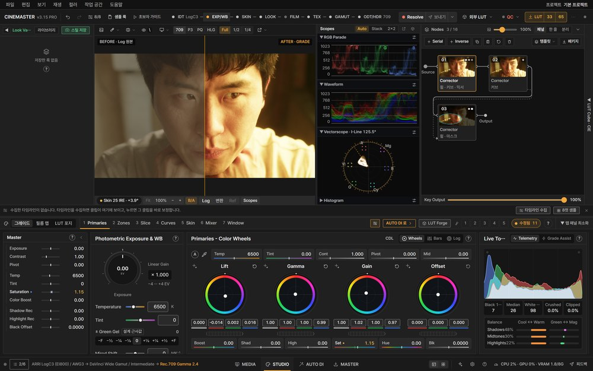

한 번 만든 LUT, 타임라인 전체로
마스터 룩 제작 · 클립마다 자동 보정 · DaVinci Resolve 타임라인 일괄 적용


섀도는 청록, 하이라이트·피부는 주황. 상업 영화의 대표적인 색 대비
왼쪽 Log 원본(Blackmagic RAW) · 오른쪽 그레이딩 결과 · 가운데 선을 끌어 비교
- 15카메라 Log ARRI LogC3 · LogC4, RED Log3G10, Sony S-Log3, Blackmagic Film Gen 5, Canon Log 2 · 3, Apple Log, Panasonic V-Log, Fujifilm F-Log · F-Log2, Nikon N-Log, DJI D-Log입력 목록 보기
- 10 + 6필름 스톡 네거티브 Vision3 50D · 200T · 250D · 500T, Eterna, Double-X 외 4종. 프린트 2383 · 3513 · 2393 외스톡 목록 보기
- 7 × 11출력 색역 × 감마 Rec.709 · sRGB · P3-D65 · DCI-P3 · Rec.2020, Gamma 2.4부터 PQ 4000 nit · HLG까지출력 목록 보기
- 16노드 보정을 노드에 나눠 쌓고, 노드마다 영역 마스크 와 HSL 키어로 범위를 정합니다기능 보기
현장에서 납품까지, 이럴 때 씁니다
-
타임라인 전체 일괄 적용
마스터 룩 한 번 · 클립마다 노출 · 화이트밸런스 · 피부 · 렌즈 자동 보정 · 클립별 LUT · DaVinci Resolve 타임라인에 한 번에 적용
-
현장 모니터 · 카메라용 룩
33pt 모니터 LUT · 카메라 SD 카드 폴더 구조 · 노출 · 화이트밸런스의 카메라 세팅 환산
-
DaVinci Resolve 마무리
Resolve 클립 따라가기 · 지정 노드에 65pt LUT 전송 · 입력 변환 → 룩 → 출력 변환 세 노드 전송 · Resolve 프로젝트 묶기
-
멀티 카메라
카메라별 Log를 하나의 작업 색공간으로 · 같은 룩 적용 · 카메라 × 룩 일괄 굽기
-
처음 하는 색보정
네 단계 가이드 모드 · 내 영상에 입힌 룩 썸네일 16개 · 참고 사진 색 매칭
-
반복 보정 줄이기
피부 기준점 자동 찾기 · 노출 · 화이트밸런스 제안 · 비슷한 컷 장면 묶기 · PC 안에서 계산
-
촬영 원본 바로 열기
H.264 · HEVC · ProRes · DNxHD · XAVC · Blackmagic RAW · RED R3D 프록시 없이 재생 · 정지 프레임 원본 정밀도
-
납품 규격
색역 · 클리핑 검사 · 규격 자동 정리 · SDR + HDR 동시 출력
한 프로그램 안에서 할 수 있는 여섯 가지
여섯 묶음 · 실제 조작 영상 · 요점
- 엔진 · 화면 · 웹 버전 동일 수식
- ACES 출력 변환: OpenColorIO 변환
- .cube LUT 33 · 65 크기, 범위 세 가지
- 질감(그레인 · 할레이션): DCTL
- 노드별 LUT: Resolve 노드 패키지
화면 ↔ 내보낸 LUT 자동 비교: 142가지 상태
카메라 Log에서 납품 색공간까지
카메라 Log → 작업 색공간 → 납품 색공간
카메라 Log 15종 · 이름을 누르면 원본 미리보기
프로그램에서 고르는 곳
MEDIA → Manufacturer · Log / Gamut · 메타데이터 자동 추천

작업 색공간 3종 · 한 번 만든 룩을 다른 카메라 영상에 그대로
프로그램에서 고르는 곳
MEDIA → Working Space
- 색순응Bradford · CAT02 · XYZ Scaling
- 화이트밸런스색온도 · 틴트 · Green 젤 · Mired
- 피부색 보호스킨톤 라인 기준

출력 색역 7종 × 감마 11종 · ACES 출력 변환 · 이름을 누르면 미리보기
프로그램에서 고르는 곳
MASTER → Output Color Space · Output Gamma
색역 7
감마 · EOTF 11
- Full카메라 Log → 디스플레이
- Look-OnlyCST 사이에 넣는 룩 LUT
- Scene노출 · 화이트밸런스 · 룩 (출력 변환 제외)
- ACES 출력 변환ACES 1.3 · 2.0의 Rec.709 · sRGB · P3-D65 · Rec.2020 · HDR(PQ 500 ~ 4000 nit) 21가지
- ACES RGCReference Gamut Compression 색역 압축
- ACES 주고받기CLF · OpenColorIO 설정 · AMF 저장 · AMF 가져오기

HDR: MaxCLL · MaxFALL · Dolby Vision XML · SDR 트림 · QuickTime 감마 보정(Rec.709-A)
네거티브 10종 × 프린트 6종 · 이름을 누르면 미리보기
프로그램에서 고르는 곳
FILM LAB → 조합 버튼 · Negative · Print Stock
네거티브 10
프린트 6
- 현상Push / Pull 증감, 프린터 라이트, CMY 헤드
- 질감그레인 · 할레이션 · 블룸 · 게이트 위브
- 나만의 스톡필름 LUT 가져오기 · 슬롯 10개

조합 60가지 · 스톡 이름은 참고한 대상이며 각 제조사와 무관
수집부터 납품까지, 네 단계 워크플로우
MEDIA → STUDIO → AUTO DI → MASTER · 단계마다 갈래 · 실제 조작 영상
Resolve 타임라인 수집 · 클립 · 메타데이터 · 대표 프레임 · 카메라와 Log 자동 판독 · 원본 재생 · 클립 빈 · 레퍼런스 스틸
작업 고르기, 작업 여덟 가지
메뉴 [작업 공간]에서 작업 선택 · 작업마다 필요한 도구만 있는 전용 창

- 타임라인 전체 적용 (AUTO DI)타임라인 수집 · 마스터 룩 · 클립마다 노출 · 색 · Resolve 일괄 적용
- Resolve 연동 그레이딩Resolve 클립 따라가기 · 노출 · 휠 · 노드로 전송
- 빠른 LUT 매칭원본 · 레퍼런스 색 매칭 · LUT 저장
- LUT 복제 · 변환LUT 분석 · 카메라 · 색공간 · 크기 변환
- 검수(QC) 스튜디오스틸 · LUT · 렌더 파일 규격 검사 · 보고서
- 현장 DIT카메라 · 노출 · 모니터 LUT · CDL · SD 카드 팩
- LUT 제작 스튜디오샘플 106종 · 레퍼런스 매칭 · 필수 검수 · 65 / 35 / 33 / 17pt 묶음 출고
- 전체 스튜디오네 단계 · 모든 도구 · Ctrl + K 명령 찾기
바로 시작할 작업 설정 · 전용 창 작업을 전체 스튜디오에서 이어서
룩 하나에서 나오는 파일
- .cube LUT
- 33 · 65 크기. Full 또는 CST 사이에 넣는 Look-Only. 이름 규칙 · 범위 · 폴더는 내보내기 프리셋으로 묶습니다.
- 클립별 LUT
- AUTO DI가 클립마다 맞춘 LUT · Resolve 적용 스크립트 · 요약을 zip 하나로.
- DCTL
- LUT에 담기지 않는 샤픈, 그레인, 할레이션, 스킨 소프트너.
- Resolve 노드 패키지
- 노드별 LUT과 매트, 노드 트리 스크립트.
- 일괄 내보내기
- Rec.709, P3, HDR10, HLG 등 고른 출력을 zip 하나로.
- HDR 납품
- HDR10과 SDR 트림 듀얼 마스터, MaxCLL · MaxFALL, Dolby Vision XML.
- ACES 주고받기
- CLF(LMT), OpenColorIO 설정 묶음, AMF 저장과 AMF 가져오기.
- 검수 보고서
- 출품 규격 PASS / FAIL 표. CSV와 인쇄용.
- 룩 파일
- 룩 설정 전체를 담은 파일.
다운로드
설치형: 전체 기능 · 웹 버전: 색보정 · LUT 저장 · v3.15.2 · 2026년 11월 26일
| 항목 | 설치형 | 웹 |
|---|---|---|
| 어디서나 됩니다 | ||
| 색보정 · 노드 | ||
| 필름 랩 · 스코프 | ||
| .cube LUT 저장 | ||
| ACES 출력 변환 · 명령 찾기(Ctrl + K) | ||
| 설치형에서만 됩니다 | ||
| Shot Match | ||
| Resolve 연동 | ||
| HDR 납품 | ||
| 클립 빈 | ||
| AI 어시스트 (피부 기준점 · 자동 밸런스 · 장면 묶기) | ||
| 영상 이어 재생 · RAW (CineMaster 플레이어) | ||
| 검수 스튜디오 · ACES 주고받기 | ||
| Gemini AI 분석 | ||
| 설치와 업데이트 | ||
| 설치 | 마법사 | 필요 없음 |
| 새 버전 알림 · 앱 안에서 설치 | 늘 최신 | |
| 형식 | 설치형 | 웹 |
|---|---|---|
| 영상 | ||
| H.264 MP4 · MOV, WebM | ||
| HEVC · ProRes · DNxHD / HR · XAVC · AV1 (MOV · MXF) | ||
| 사진 | ||
| PNG(16-bit 권장) · JPEG · WebP | ||
| TIFF · OpenEXR · DPX | 미지원 | 미지원 |
| RAW | ||
| ARRIRAW · ARRICORE | 미지원 | 미지원 |
| Blackmagic RAW · RED R3D | 디코더 설치 시 | |
| Canon RAW Light · CinemaDNG · N-RAW | 미지원 | 미지원 |
ARRIRAW · ARRICORE: ProRes 또는 Log 16-bit PNG 스틸로 변환
파일 정보
- 설치 파일
- CineMaster_AI_Setup_v3.15.2.exe · 216.9 MB
- SHA-256 ccb8c3702efb6e6dd65c5210685765692f8edd0fffe163c0260dce024f358fdc
- 웹 버전 zip
- CineMaster_AI_Web_v3.15.2.zip · 3.3 MB
- SHA-256 8fad9e5a574580ab96d341afa2a199986eded41a43c12dc09af32b0de803ef6e
- 사용설명서 PDF
- CineMaster_AI_v3.15.2_Manual_KR.pdf · 9.5 MB
파일 확인: PowerShell Get-FileHash 파일이름 ↔ 위 SHA-256
브라우저 안에서 실행 · 사진과 영상은 업로드되지 않음

웹 버전: 색보정 · 노드 · 영역 마스크 · 필름 랩 · 스코프 · .cube 저장
설치형 전용: Shot Match · Resolve 연동 · 클립 빈 · AI 어시스트 · 영상 재생 · RAW · HDR 납품
PC 화면 기준 · 오프라인용 웹 버전 zip, 3.3 MB
필요한 환경
- Windows 10 또는 11, 64비트
- WebGL2 지원 그래픽
- 메모리 8GB 이상, 화면 1920×1080 이상 권장
- 웹 버전: Chrome · Edge 최신판
- Resolve 연동: DaVinci Resolve Studio
- Blackmagic RAW: Blackmagic RAW 또는 DaVinci Resolve 설치 필요
설치 순서
- 설치 파일 받기 →
CineMaster_AI_Setup_v3.15.2.exe - 내려받은 파일 실행
- 다음 → 설치
- 바탕화면의 CineMaster AI 아이콘으로 실행
- 사용 안내 확인 → 확인했습니다
새 버전: 알림의 받아서 설치 또는 덮어 설치 · 룩과 설정 유지
Windows PC 보호 창
코드 서명 인증서가 없어 첫 실행 때 표시됩니다.
- 추가 정보
- 실행
더 보기
타임라인 클립 바 크기 조절
- 타임라인 클립 바: 위 경계선을 끌어 높이를 바꾸면 클립 썸네일이 16:9 그대로 커지고 작아집니다. 뷰어가 남는 높이를 채웁니다.
- 경계선 더블클릭 = 기본 크기, 방향키로 조금씩. 크기는 저장되어 다시 열어도 그대로입니다.
이전 버전 36개 보기
있는 기능 다듬기 — 검수 · 장면 판단 · 속도
- AUTO DI 검수: 조명 보정(노출 · 화이트밸런스)을 뺀 기준으로 스킨톤 · 무채색을, 그 클립의 그림으로 색역 클리핑을 잽니다. 검사마다 감점이 보입니다.
- AUTO DI 굽기: 격자가 접히면 필름 스톡 분기부터 덜어 내고 그 클립의 계획에도 남깁니다.
- 밤 장면: 푸른 달빛 · 청록 연출광도 절반 넘게 남깁니다.
- 장면 판단: 실내 · 실외를 하늘 · 가로등 · 해와 하늘빛으로 판단합니다. 카메라 4종 실제 촬영본 40컷에서 13 → 36컷. 청록 · 자주 연출광은 보정하지 않는 색 조명으로 읽습니다.
- AUTO DI 분석 · 검수 · 클립별 LUT 굽기를 여러 스레드로 — 40컷 분석 10.3초 → 4.3초, 적용 묶음 5.8초 → 2.4초.
- 5노드 트리: AUTO DI 노출을 Node 02 CDL Offset으로 옮겨 노드에서 바로 다듬습니다. 룩 세기가 여러 노드의 룩 전체에 걸립니다.
- 레퍼런스 매칭: 컬러 레퍼런스를 흑백 룩으로 읽던 것을 고쳤습니다.
- 65pt LUT 저장이 작업 대기열로 — 엔진 상태에 진행률 · 취소.
- ACES 출력: 롤오프 칸 흐리게, 피크 버튼 잠금, Resolve 노드 스크립트 · 바이블에 ACES 출력 변환 이름. Auto-Legalize는 ACES가 건너뛰는 값을 바꾸지 않습니다.
- 헤더 신호 흐름: 필름 스톡 이름이 있어도 펼친 채, 필름을 끄면 다시 펼칩니다.
편의성 — 되돌리기 · 이어서 작업 · 진행률
- AUTO DI 적용 되돌리기: 적용 전에 Resolve 프로젝트를 .drp로 백업하고, 클립마다 새 그레이드 버전에만 LUT을 겁니다. [적용 되돌리기] 한 번으로 클립마다 적용 전 버전으로 돌아갑니다.
- 이어서 작업: 수집한 타임라인 · 장면 분석 · 손본 클립이 프로젝트마다 저장됩니다. 앱을 다시 켜도 그대로입니다.
- 분석 진행률: 타임라인 분석이 뒤에서 돌고 진행률과 [중지]가 보입니다. 중지해도 지금 타임라인은 그대로입니다.
- 장면 전체 고치기: AUTO DI 장면 묶음의 시간대 · 조명 · 렌즈 판단을 한 번에 고칩니다.
- 원본 재생: Resolve에서 수집한 클립은 타임라인 바의 [원본 재생]으로 원본 파일을 CineMaster 플레이어로 엽니다.
- 실행 취소가 클립마다 이어집니다. 다른 클립에 갔다 와도 Ctrl+Z가 그 클립에서 이어집니다.
- [타임라인 수집]은 어디서 누르든 같은 동작입니다. 단축키 Shift+T(타임라인 바) · Shift+N(다음 단계) · Alt+R(레퍼런스 매칭).
- 길잡이 · 작업 고르기에 '타임라인 전체 적용 (AUTO DI)'.
- 앱을 열 때 작업 고르기 대신 사용 안내가 뜹니다. 작업 고르기는 메뉴 [작업 공간]에 그대로 있습니다.
- 앱 안에서 새 버전 설치: 설치형은 새 버전 알림의 [받아서 설치]로 받고, SHA-256을 확인한 뒤 설치 창을 엽니다.
화면 반응 최적화 — 클립이 많은 타임라인
- 단계를 바꿀 때마다 헤더가 화면 전체의 배치를 다시 계산하던 것을 고쳤습니다. 타임라인 클립 바 · AUTO DI 보드처럼 큰 화면에서 단계를 바꿀 때 생기던 짧은 멈춤이 줄었습니다.
- 타임라인 클립 바는 보이는 클립만 그립니다. 클립이 수백 개여도 STUDIO · MASTER로 넘어갈 때 멈추지 않고, 고른 클립 쪽으로 바가 옮겨 갑니다.
- AUTO DI 보드는 화면 밖 카드의 배치 · 그리기를 건너뛰고, 썸네일을 화면을 막지 않고 풉니다.
- 실제 GPU에서 102클립 타임라인으로 잰 결과: AUTO DI 열기 2.2초 → 1.0초(50ms 넘는 멈춤 2번 → 0번), 단계 전환의 50ms 넘는 멈춤 2번 → 0 ~ 1번, LUT 포지 열기 1번 → 0번, AUTO DI 보드 스크롤의 프레임 간격 p95 12.1ms → 6.2ms.
AUTO DI 밤 장면 판단
- AUTO DI의 장면 분석이 ISO를 올리지 않고 찍은 밤 장면(가로등 · 실용광으로 인물을 밝힌 야외, 푸른 달빛으로 연출한 세트)을 '주간'으로 읽던 것을 고쳤습니다. 화면 위쪽에 낮의 하늘 · 창빛이 있는가와 어두운 화면을 비추는 빛의 색(따뜻한 실용광 · 차가운 달빛)을 함께 봅니다.
- 실제 촬영본 60컷(밤 40 · 낮 20)으로 잰 결과: 밤 판단 28/40 → 40/40, 낮을 밤으로 잘못 읽은 컷은 1컷 그대로입니다. 밤으로 읽힌 클립은 '야간 · 조명 분위기 유지'가 걸려 대낮처럼 밝히거나 조명 색을 지우지 않습니다.
- 판단이 다를 때는 이전처럼 AUTO DI 카드의 시간대 태그를 눌러 고칠 수 있습니다.
네 단계 워크플로우 · AUTO DI — 한 번 만든 LUT, 타임라인 전체로
- 하단 독이 네 단계가 됐습니다: MEDIA · STUDIO · AUTO DI · MASTER(Shift+1 ~ 4). 예전 여섯 페이지는 단계 안의 갈래로 그대로 있고, 탭을 길게 눌러 끌면 순서가 바뀝니다.
- AUTO DI: STUDIO에서 만든 마스터 룩을 타임라인 전체에 적용합니다. 클립마다 시간대 · 조명 · 렌즈를 읽어 룩 앞의 노출 · 화이트밸런스 · ±Green · 피부 · 필름 분기를 따로 맞추고, 같은 장면의 클립은 결과를 모읍니다. 클립별 LUT을 구워 DaVinci Resolve 타임라인에 한 번에 걸거나 적용 묶음 ZIP으로 저장합니다. 손으로 고친 클립은 덮어쓰지 않습니다.
- 타임라인 클립 바: STUDIO · MASTER의 뷰어 아래에 수집한 클립이 보이고, 누르면 그 클립의 원본과 그레이드로 바뀝니다. 손으로 고친 클립은 번호 테두리가 앰버입니다. 데크 위 줄의 [타임라인] 버튼 · 보기 메뉴로 끄고 켭니다.
- CONFORM의 [타임라인 전체 수집] 결과가 그대로 타임라인 바와 AUTO DI에 올라옵니다. Resolve를 다시 수집하지 않습니다.
- 통합 레퍼런스 매칭: STUDIO · LUT 포지의 [레퍼런스] 탭. 같은 장면이면 화소끼리, 다른 장면이면 피부 · 하늘 · 식물 · 무채색 영역끼리 맞추고 샘플 라이브러리로 룩을 인식합니다. 1:1 Shot Match · 톤 매칭은 같은 탭의 방식으로 남아 있습니다.
- 명령 찾기(Ctrl+K) 같은 큰 창을 열 때 오류가 나면 화면 전체가 검게 멈추던 것을 고쳤습니다. 그 창만 닫고 [다시 불러오기]를 안내합니다.
- 헤더 · 하단 독의 글자 겹침과 1600 ~ 1740px 창에서 그레이드 페이지의 위 줄이 넘치던 것을 고쳤습니다.
작업 순서 길잡이 · 샘플 106종 · LUT 엔진 안정성
- 작업 순서 길잡이: 하단 독 왼쪽의 [길잡이]를 누르면 할 일을 순서대로 보여 줍니다. 단계마다 [여기로 가기]로 그 화면으로 옮겨 주고, 끝난 단계는 스스로 표시합니다. 목표는 LUT 만들기 · 레퍼런스처럼 맞추기 · Resolve로 보내기 세 가지입니다.
- LUT FORGE의 샘플이 106종이 됐습니다. 카드에 톤 곡선과 암부 · 미드톤 · 명부의 대표 색이 바로 보이고, 이름만 다른 중복이 없도록 전부 서로 다른 룩으로 맞췄습니다.
- LUT 정확도 측정: LUT FORGE의 검수 칸에서 33pt · 65pt의 격자 보간 오차(ΔE2000)를 재서 보여 줍니다.
- 극단적인 색에서 계산이 깨지던 경우 두 가지를 고쳤습니다(소프트 라이트 합성 뒤의 넘침, 톤매핑의 넘침). 보통의 그림에서는 결과가 같습니다.
- 국소 자동 보정이 약 2배, 여러 파일 묶음 저장이 약 1.8배 빨라졌습니다.
05 LUT FORGE — 65pt LUT 제작 · 검수 · 변환
- 하단 독에 05 LUT FORGE 페이지가 생겼습니다(Shift+5). MASTER는 06이 됐습니다(Shift+6). 작업 고르기 맨 위의 'LUT 제작 스튜디오'로도 엽니다.
- 샘플 75종(필름 · 장르 · 광고 · 다큐 · 흑백 · 기술)을 레시피로 넣었습니다. 고르면 슬라이더 값으로 들어와 그대로 고칠 수 있고, 65pt로 굽습니다.
- 레퍼런스 매칭: 이미지 1 ~ 3장의 톤 · 색 성향을 슬라이더 값과 잔여 뉘앙스 격자로 옮깁니다. 명암 · 색상 · 채도 · 스플릿 토닝을 따로 조절합니다.
- 말로 만들기: '비 오는 밤의 누아르, 청록 암부, 피부 유지'처럼 적으면 기존 슬라이더 값으로 바꿉니다. 이 PC 안에서 읽고, '대비만 15% 낮게' 같은 상대 수정도 됩니다.
- LUT 믹서 · Diff: 두 LUT을 전체 / 휘도만 / 색만, 밝기 대역별로 섞고, 차이(ΔE · 변위)를 보고, Delta LUT으로 뽑습니다.
- 필수 검수: 내보내기 전에 단조성 · 밴딩 · 색역 클리핑 · 스킨톤 · 무채색 축을 검수해 Health Score를 냅니다. 통과해야 출고가 열리고, 자동 보정은 결함 격자점 둘레만 다듬습니다.
- 묶음 출고: 출력 색공간 × 격자 크기(65 · 35 · 33 · 17pt) × 강도(100 · 75 · 50%)를 한 번에 저장합니다. 장비별 프리셋과 QC 보고서가 함께 나옵니다.
- 레시피 서명: 내보낸 .cube를 다시 열면 만든 때의 슬라이더를 그대로 되찾습니다.
- 스트레스 시뮬레이터: 노출 · 색온도 · 채도를 흔들어 LUT이 버티는지 화면에서 확인합니다. 내보내는 LUT은 달라지지 않습니다.
- FILM LAB에 LUT에 담기는 색 변환과 담기지 않는 광학 질감을 나눠 표시했습니다. GRADE · FILM LAB에서 지금 룩을 LUT Forge로 보낼 수 있습니다.
- 스킨톤 축을 125.5°로 바꿨습니다. Skin-Tone Lock · Skin Hue Uniformity를 쓴 기존 룩은 결과가 조금 달라집니다.
- 재생 중 해상도 자동: 4K 영상을 재생하는 동안 처리 해상도를 화면 크기에 맞춰 낮춥니다. 멈추면 원래 해상도로 돌아옵니다(설정에서 끌 수 있습니다).
ACES · 작업별 전용 창 · 새 화면 디자인 · CineMaster 플레이어
- ACES 출력 변환을 넣었습니다. MASTER의 출력 칸에서 ACES 1.3 · 2.0의 Rec.709 · sRGB · P3-D65 · Rec.2020 · HDR(PQ 500 ~ 4000 nits)을 고르실 수 있고, 화면과 내보낸 LUT이 OpenColorIO의 같은 변환을 거칩니다.
- 작업 색공간에 ACEScc를, 색역 압축 방식에 ACES RGC(Reference Gamut Compression)를 더했습니다. 고르지 않으면 예전과 같은 결과입니다.
- MASTER에 'ACES 주고받기' 탭이 생겼습니다. 지금 룩을 CLF(LMT) · OpenColorIO 설정 묶음 · AMF로 저장하고, 받은 AMF를 가져와 카메라 · 출력 변환 · ASC CDL을 옮깁니다.
- Resolve가 ACES 프로젝트이면 연동 창에 입력 · 출력 변환을 보여 드리고, 출력이 다르면 [ACES 출력 맞추기]를 권합니다. ACES 출력을 고른 상태로 보내면 하이라이트 롤오프를 LUT에 굽지 않아 Resolve의 출력 변환과 두 번 걸리지 않습니다. 왕복 검증에 'ACES 프로젝트' 구성을 더했습니다.
- 앱을 열면 작업 고르기 창에서 작업을 고릅니다. Resolve 연동 그레이딩, 빠른 LUT 매칭, LUT 복제 · 변환, 검수(QC) 스튜디오, 현장 DIT는 그 일에 필요한 칸만 보여 주는 전용 창이고, 전용 창에서 하던 작업은 전체 스튜디오로 그대로 넘어갑니다. '다음부터 이 작업으로 바로 시작' 을 켜면 이 창을 건너뜁니다.
- Ctrl+K 명령 찾기를 만들었습니다. 메뉴 · 패널 · 카메라 · 출력 · 샘플 룩 · 가이드를 한글, 영문, 초성, 예전 이름으로 찾습니다.
- 화면을 전체적으로 정리했습니다. 영상 주변은 무채색 회색으로, 강조색은 앰버 하나로 통일했고, ? 도움말과 슬라이더 조작(Shift = 정밀, 더블클릭 = 기본값)을 한 가지 규칙으로 맞췄습니다.
- 이름을 바꿨습니다: MEDIA → SOURCE, COLOR → GRADE, DELIVER → MASTER, 미디어 풀 → 클립 빈, 미디어 스토리지 → 폴더 탐색기, 파워 윈도우 → 영역 마스크, 퀄리파이어 → HSL 키어, Outside 노드 → 반전 노드, 컬러 워퍼 → 컬러 메쉬, ColorSlice → 벡터 밀도, Color Compressor → 색상 수렴, HDR 존 → 존 그레이딩, 그랩 스틸 → 스틸 저장. 단축키와 저장한 파일은 그대로이고, 명령 찾기에서 예전 이름으로도 찾으실 수 있습니다.
- 검수 스튜디오에서 그림 · 렌더 파일 · 폴더를 한 번에 검사하고 CSV · 인쇄용 보고서로 저장합니다.
- 노드 트리 템플릿, 골라서 붙여 넣기(Alt+V), A/B 임시 비교(` 키), 카드 머리 Alt+클릭으로 그 카드만 끄고 보기를 더했습니다.
- 내보내기 프리셋(이름 규칙 · 범위 · 크기 · 폴더 · Resolve 설치를 한 번에)과 프로젝트를 넘나드는 내 룩 라이브러리를 만들었습니다. 커브에 Lum Mix와 채널별 Soft Clip을 더했습니다(기본값은 예전 결과).
- 영상 재생을 CineMaster 플레이어로 바꿨습니다. 앱에 든 디코더가 원본에서 바로 읽어 재생하므로 운영체제의 코덱이나 다른 플레이어가 필요 없고, H.264 · HEVC · ProRes · DNxHD · XAVC · AV1 등이 파일 크기와 상관없이 바로 열립니다. 프록시를 기다리거나 파일을 내려받지 않습니다.
- 영상이 멈춰 있을 때는 그 프레임을 원본 16비트로 다시 읽어 보여 드립니다(정밀 프레임). 스코프 · 스포이드 · 매칭 · QC가 이 값을 씁니다. 재생 소리는 도구줄의 [재생 소리]로 켭니다.
- 설정에 '하드웨어 가속' 탭이 생겼습니다. GPU 디코드 · 인코드를 먼저 쓰고 실패하면 CPU로 넘어갑니다. 하단 독에서 CPU · GPU · VRAM 사용률과 백그라운드 작업을 보실 수 있습니다. Look Vault의 일괄 LUT 굽기도 여기에 진행률이 보이고 취소할 수 있습니다.
- Blackmagic RAW를 엽니다. PC에 설치된 Blackmagic RAW 구성 요소(Blackmagic RAW Player · DaVinci Resolve 등)를 찾아 쓰고, 없으면 안내해 드립니다. ARRIRAW는 지원하지 않습니다.
- Resolve로 보내기가 규격 검사에 막혀 LUT이 걸리지 않던 것을 고쳤습니다. 이제 보내고, 걸린 항목은 결과 문구에 적습니다. 할레이션 · 그레인 같은 질감은 DCTL로 다음 노드에 함께 보냅니다. 연결 확인으로 창이 멈추던 것도 줄였습니다.
- Resolve에서 저장한 스틸(.drx)을 노드 트리 템플릿으로 등록해, 정해 둔 노드에 LUT을 한 번에 넣을 수 있습니다.
- AI 어시스트에 '말로 룩 만들기' 를 더했습니다. 적으신 말을 기존 조정값으로 바꾸며, 인터넷과 모델을 쓰지 않습니다. 장면 묶기는 400클립 기준 26초에서 0.06초로 빨라졌습니다.
- AI 어시스트의 장면 묶기에 [장면별 밸런스 계산]을 더했습니다. 같은 장면의 클립들을 함께 보고 노출 · 화이트밸런스를 장면마다 하나씩 제안하며, 지금 룩에 그 값을 더한 LUT을 장면 수만큼 한 번에 저장할 수 있습니다.
- AI 어시스트에 '영역 매칭' 을 더했습니다. 레퍼런스와 원본을 피부 · 하늘 · 식물 · 나머지 화면으로 나눠 같은 영역끼리 맞춥니다. 얼굴이 보이지 않는 컷에서도 피부를 더 좁게 찾도록 사람 · 피부 분할 모델을 함께 넣었습니다.
- Blackmagic RAW와 RED R3D를 CineMaster 플레이어로 이어 재생합니다. 멈추면 그 프레임을 원본 정밀도(12 · 16비트)로 다시 엽니다. R3D는 GPU로 풀어 재생합니다. Blackmagic RAW는 따로 설치하지 않아도 열립니다.
- Resolve 연동: CineMaster 프로젝트가 Resolve 프로젝트 하나에 묶입니다. 다른 Resolve 프로젝트가 열려 있으면 따라가기와 보내기를 멈추고 알려 드립니다.
- Resolve 연동에 [세 노드로 보내기]를 더했습니다. 노드 세 개에 입력 변환 → 룩 → 출력 변환 LUT을 한 번에 겁니다 (Resolve의 CST → LUT → CST 구성과 같은 일).
- Resolve로 바로 보내는 LUT을 모두 65pt로 올렸습니다. 굽는 시간은 여러 스레드로 나눠 0.8초에서 0.1초로 줄였고, 결과 값은 예전과 같습니다. 연동 설정에서 33pt로 되돌릴 수 있습니다.
- Resolve 연동이 더 빨리 따라옵니다. 클립과 플레이헤드를 확인하는 주기를 절반으로 줄였고, 값을 바꾼 뒤 자동으로 보내기까지의 시간을 2.5초에서 1초로 줄였습니다. 따라가기 화면은 폭 1920으로 가져오며 [프레임 다시 가져오기]는 원본 크기입니다.
- 'LUT 강도' 는 내보내기 전용 값이라 Resolve로 보내는 LUT에는 굽지 않습니다. 화면과 Resolve가 같은 그림이 됩니다 (연동 설정에서 굽도록 바꿀 수 있습니다).
- 좁은 창에서 큰 창의 글자가 잘리던 것을 고쳤고, 알림을 눈에 덜 띄는 모양으로 바꿨습니다. 보통 알림은 4초 뒤에 스스로 사라집니다.
- Ctrl+S가 파일 창 없이 앱 전용 폴더에 바로 저장합니다 (룩 파일로 내려받기는 Ctrl+Shift+S). 노드를 오른쪽 버튼으로 누르면 메뉴가 열립니다. 하단의 페이지 탭을 창 가운데에 두었습니다.
- 클립 빈의 스틸 · 썸네일 색을 멈춘 프레임 · 재생 화면과 같게 맞췄습니다. ALEXA Mini의 ProRes 4444 XQ처럼 색 표식이 빈 영상도 열립니다.
- 설정에서 업데이트 채널(안정판 · 베타)을 고르실 수 있고, 도움말 메뉴에 [새 버전 확인]을 두었습니다. 기본은 안정판입니다.
- 기존 카메라의 수식 · 기본 설정으로 내보내는 LUT · 저장한 룩 파일은 그대로입니다.
AI 어시스트 · 카메라 Log 6종 추가
- 하단 독에 [AI 어시스트]를 만들었습니다. 피부 기준점 · 자동 밸런스 · 장면 묶기 · 내 스타일 · QC 설명을 한 창에서 쓰고, 계산은 모두 이 PC 안에서 합니다.
- 제안마다 근거와 신뢰도(높음 · 보통 · 낮음)를 보여 드립니다. 누르고 있는 동안 미리보기로 확인하고, 적용한 뒤에는 Ctrl+Z 한 번으로 되돌립니다.
- 피부 기준점은 화면에서 얼굴을 찾아 볼 · 이마의 피부색을 씁니다. 얼굴이 없으면 예전처럼 색 범위로 찾고 신뢰도를 낮게 표시합니다.
- 내 스타일은 기본으로 꺼져 있습니다. 켜면 LUT을 저장할 때 그 화면의 밝기 · 색 분포 숫자와 보정값을 이 PC에만 기록합니다(영상 · 사진은 저장하지 않습니다). 기록은 언제든 지울 수 있습니다.
- Panasonic V-Log, Fujifilm F-Log · F-Log2 · F-Log2 C, Nikon N-Log, DJI D-Log를 지원합니다. 제조사가 공개한 문서의 수식 그대로이고, 파일에 Log 이름이 적혀 있으면 자동으로 맞춥니다.
- 하단 독 오른쪽에 [피드백 보내기] 버튼을 두었습니다.
- 사용 통계에 동의한 경우, 처음 LUT을 저장하기까지 걸린 시간을 한 번 보냅니다. 개인정보 처리 안내에도 적었습니다.
- 기존 카메라의 수식 · 내보내는 LUT · 저장한 룩 파일은 그대로입니다.
잘리던 안내 글자 · 피드백 답장
- Resolve 연동 창의 연결 안내처럼 긴 경로가 들어 있는 글이 오른쪽에서 잘리던 것을 고쳤습니다. 칸 안에서 줄을 바꿔 끝까지 보입니다.
- 홈페이지 피드백 칸: 버그 · 질문일 때 답장 받을 이메일을 적어 달라고 안내합니다.
- 자주 묻는 질문 아래에 피드백 칸 안내를 넣었습니다. 자주 나오는 질문은 이 목록에 답을 올립니다.
- 링크를 공유할 때 보이는 미리보기를 심볼과 로고로 바꾸고 이름에서 버전을 뺐습니다.
- 수식 · 내보내는 LUT · 저장한 룩 파일은 그대로입니다.
피드백 칸 · 사용 통계 동의 · 개인정보 처리 안내
- 홈페이지 [더 보기]에 피드백 칸을 만들었습니다. 로그인 없이 버그 · 기능 제안 · 질문을 바로 보낼 수 있습니다.
- 프로그램을 처음 열 때 사용 통계와 오류를 보낼지 물어봅니다. 동의한 경우에만 프로그램 버전, 연 페이지 이름, 오류 문구를 익명으로 보냅니다. 영상 · 파일 이름 · 룩 · LUT은 보내지 않습니다.
- 동의는 도움말 메뉴의 [사용 통계 · 오류 보내기]에서 언제든 바꿀 수 있습니다. 같은 메뉴에 [피드백 보내기]와 [개인정보 처리 안내]를 넣었습니다.
- 홈페이지에 개인정보 처리 안내를 올렸습니다. 모으지 않는 것, 동의한 경우에만 모으는 것, 보관하는 곳을 적었습니다.
- 수식 · 내보내는 LUT · 저장한 룩 파일은 그대로입니다.
탭과 Master 줄을 끌어서 옮기기 · 설치 후 아이콘
- COLOR의 팔레트 탭과 각 페이지 작업 칸의 탭을 마우스로 끌어 순서를 바꿀 수 있습니다. 숫자 키 1~7은 화면에 보이는 순서를 따릅니다.
- Master 패널은 줄의 이름을 잡고 위아래로 끌면 묶음 안에서 순서가 바뀝니다. 이름이 아닌 곳을 좌우로 끌면 예전처럼 값이 바뀝니다.
- 키보드로는 탭에 초점을 두고 Alt + 방향키로 옮깁니다. 바꾼 순서는 [레이아웃 초기화]로 되돌립니다.
- 새 버전을 덮어 설치한 뒤에도 바탕화면 · 시작 메뉴 아이콘이 예전 로고로 남던 것을 고쳤습니다.
- 수식 · 내보내는 LUT · 저장한 룩 파일은 그대로입니다.
클립이 많은 타임라인 수집 · 새 사용설명서
- CONFORM의 [타임라인 전체 수집]이 클립이 많은 타임라인에서 중간에 멈추던 것을 고쳤습니다. 60개까지만 읽던 제한을 1000개로 늘렸습니다.
- 수집하는 동안 '42 / 150' 처럼 진행 상황과 지금 읽는 클립 이름이 보이고, [중지]를 누르면 그때까지 읽은 클립만 가져옵니다.
- 같은 원본에서 여러 번 잘라 쓴 클립도 컷마다 제 대표 프레임으로 샷 밸런싱합니다. 읽지 못한 클립은 건너뛰고 나머지를 계속 읽습니다.
- 수집 중에는 Resolve 따라가기를 잠시 쉬어, 화면이 클립을 따라 계속 바뀌지 않습니다. 대표 프레임을 줄여 담아 메모리도 훨씬 덜 씁니다.
- 사용설명서를 홈페이지와 같은 디자인으로 새로 만들고, 그림과 설명을 모두 지금 화면에 맞췄습니다.
- 홈페이지: 머리줄 로고를 누르면 늘 첫 화면 맨 위에서 다시 열리고, 바닥글의 메일 주소는 눌리지 않는 글자로 바꿨습니다.
- 홈페이지: 심볼을 앱 아이콘과 같은 모양(알약마다 구멍 하나)으로 맞추고, 받기 칸은 설치 파일과 웹 버전 두 가지로 정리했습니다.
- 수식 · 내보내는 LUT은 그대로입니다.
DaVinci Resolve의 DCTL 오류 창 해결
- DaVinci Resolve가 LUT 목록에서 Spatial_Look.dctl을 읽을 때마다 'Error Processing DaVinci CTL' 창을 띄우던 것을 고쳤습니다.
- 이미 내보낸 Spatial_Look.dctl은 새 버전에서 다시 내보내면 오류가 사라집니다. 색을 담은 .cube 파일은 그대로 쓰시면 됩니다.
- 화면 · 수식 · 내보내는 LUT은 그대로입니다.
DaVinci Resolve가 꺼져 있을 때 창이 멈추던 것 해결
- DaVinci Resolve를 켜지 않고 쓸 때 어디를 누르든 1~3초씩 늦게 반응하던 것을 고쳤습니다. 앱이 Resolve 연결을 확인할 때마다 창이 몇 초씩 멈추던 것이 원인이었습니다.
- Resolve가 꺼져 있으면 연결을 시도하지 않고, 켜면 예전처럼 자동으로 연결합니다.
- Resolve는 켜져 있는데 연결이 안 될 때(외부 스크립팅 꺼짐 등)는 다시 시도하는 간격을 늘립니다. 연동 설정 도우미를 열면 바로 다시 시도합니다.
- 화면 · 수식 · 내보내는 LUT은 그대로입니다.
처음 누를 때 멈추던 것 해결
- 앱을 켠 직후 2초쯤 화면이 멈추던 것을 없앴습니다. 색 계산 준비를 뒤에서 하므로, 켜자마자 눌러도 바로 반응합니다.
- 샘플 룩 · 3D Cube · 스포이드 보정 · LUT 굽기를 처음 쓸 때 1초 넘게 멈추던 것을 없앴습니다. 필요한 준비를 화면이 뜬 직후 미리 해 둡니다.
- 샘플 룩 창이 더 빨리 열립니다. 미리보기 16칸을 한꺼번에 만들지 않고 차례로 채웁니다.
- 내보내는 LUT과 수식은 그대로입니다. 예전에 저장한 룩 파일도 그대로 열립니다.
새 로고 · 더 잘 보이는 글자 · 가벼워진 화면
- 로고를 새로 만들었습니다. 알약 세 개가 비스듬히 쌓여 틸에서 오렌지로 넘어가는 모양이며, 창 · 작업 표시줄 · 바탕화면 아이콘이 바뀝니다.
- 글자가 더 잘 보입니다. 숫자와 라벨에 쓰던 가는 고정폭 글꼴을 본문 글꼴로 바꾸고, 굵기와 작은 글자 크기를 한 단계씩 올리고, 흐린 글자색을 밝혔습니다.
- 그래프 크기를 마우스 휠로 바꿀 수 있습니다. FILM LAB의 D-LogE 곡선과 HDR Zones의 존 히스토그램 위에서 휠을 굴리면 줄고 늘어나며, 더블클릭하면 원래 크기로 돌아갑니다.
- 화면이 가벼워졌습니다. 값을 바꿀 때마다 화면 전체가 다시 그려지던 것을 없애고, 주기적으로 다시 그리던 그래프는 바뀐 때만 그립니다.
- 내보내는 LUT과 수식은 그대로입니다. 예전에 저장한 룩 파일도 그대로 열립니다.
화면을 전부 새로 다듬었습니다
- 화면 전체를 평면 디자인으로 다시 만들었습니다. 헤더 · 뷰포트 도구줄 · 스코프 · 아래 작업 칸이 창 크기에 맞춰 스스로 정리되고, 작은 창에서도 가로 스크롤이 생기지 않습니다.
- 글꼴을 Pretendard와 JetBrains Mono로 바꿔 글자와 숫자가 더 또렷하게 읽힙니다.
- 카드 안의 긴 설명을 없애고, 카드 오른쪽 위의 ? 버튼을 누르면 요약 · 조작 팁 · 단축키가 열리게 했습니다.
- COLOR 페이지: MASTER를 아래 작업 칸 왼쪽의 세로 패널로 옮기고, Primaries · HDR Zones(6구간을 한 화면에) · 3D Warper(점을 직접 끌기, 격자 밀도, Chroma·Luma 보기, 뷰포트에서 끌기) · Mixer · Power Window를 새로 구성했습니다.
- 새 색 도구: Color Compressor의 Range Width, 합성의 암부 · 명부 보호, Film Lab의 Print Contrast · Black Point, Skin Hue Uniformity, Skin Midtone Softener, 퀄리파이어의 Clean Black · Clean White · Matte Blur, 스킨톤 레이더와 타깃 스킨 프리셋.
- DELIVER 페이지: 출력 색역 · 감마 그래프, LUT 정확도 리포트, 파일 이름 규칙 버튼, 여러 출력을 한 번에 굽는 일괄 내보내기를 더했습니다.
- 스코프 창을 정리하고, 오른쪽의 세로 글자 탭을 아이콘 탭으로 바꿨습니다.
- 'JSON' 이라는 표기를 '룩 파일' 로 바꿨습니다 (룩 파일 저장 · 룩 파일 불러오기). 예전에 저장한 파일은 그대로 열립니다.
- 설정 · 가이드 창을 필요할 때 불러와 앱이 조금 더 빨리 열립니다.
사용설명서를 처음부터 다시 만들었습니다
- 사용설명서를 버전별 추가 설명이 아닌 프로그램 전체 설명서로 새로 썼습니다. 모든 그림을 최신 화면으로 다시 찍고, 그림 위 번호와 짧은 설명으로 정리했습니다.
- 헤더의 변경 기록(시계 버튼) 창이 아래 화면에 가려 일부만 보이던 문제를 고쳤습니다.
- DELIVER 페이지의 .CUBE 저장 · Resolve에 설치 버튼이 좁은 창에서 잘려 보이지 않던 문제를 고쳤습니다. 이제 저장 버튼이 오른쪽에 따로 한 줄로 모여 있습니다.
창을 다시 띄울 때 렉 없애기와 Resolve와 같은 Log 영상 레벨
- 작업 표시줄에서 창을 다시 띄울 때 화면이 한동안 검게 남던 문제를 고쳤습니다. 이제 누르는 즉시 화면이 보입니다.
- 창을 최소화해 두면 영상 프레임 처리와 Resolve 상태 확인을 쉬어 GPU와 CPU를 덜 씁니다.
- 보기 메뉴의 'Log 영상 코드값 그대로' 를 켜면, Resolve를 거치지 않고 연 Log 영상도 Resolve에서 LUT을 건 결과와 같은 밝기로 보입니다. 기본값은 예전과 같습니다.
- Resolve 왕복 검증이 원본 크기에서 계산해, 질감이 많은 장면에서도 정확하게 판정합니다.
- 프로젝트를 내보내면 미디어 풀 목록도 함께 담기고, 가져오면 그대로 이어집니다. 프로젝트를 지우면 그 프로젝트의 미디어 풀 목록도 정리됩니다.
- 사용설명서를 v3.7.1로 새로 만들었습니다 (메뉴바 · 프로젝트 · 프리뷰 해상도 · Log 영상 레벨).
프로젝트 관리자 · 상단 메뉴바 · 프리뷰 해상도
- DaVinci Resolve처럼 프로젝트를 만들고 골라 열 수 있습니다. 프로젝트마다 그레이딩 · 히스토리 · Look Vault · 미디어 풀을 따로 저장합니다. 예전 작업은 '기본 프로젝트' 에 그대로 있습니다.
- 화면 맨 위에 파일 · 편집 · 보기 · 재생 · 컬러 · 작업 공간 · 도움말 메뉴가 생겼습니다. 키보드(F10, 방향키)로도 움직일 수 있고, 단축키가 메뉴 옆에 보입니다.
- 뷰포트 도구줄과 환경설정에서 프리뷰 해상도(Full · 1/2 · 1/4)를 고를 수 있습니다. 원본 영상과 내보내는 LUT은 그대로 두고 화면 처리만 가볍게 해 4K 재생이 부드러워집니다.
- 패널의 글자 크기를 다섯 단계로 정리해 한눈에 읽기 쉬워졌습니다.
더 가벼운 재생과 '준비 중' 설정 모두 열기
- 4K 영상을 재생할 때 화면이 끊기던 원인을 없앴습니다. 스코프가 GPU를 기다리느라 멈추던 시간이 사라졌고, 영상 프레임이 바뀔 때만 다시 그려 GPU 부담이 크게 줄었습니다.
- 영상의 카메라 정보를 읽는 시간이 절반으로 줄었고, 같은 파일을 다시 열면 바로 읽습니다. 미디어 풀에 클립을 여러 개 넣을 때도 빨라졌습니다.
- 설정에서 '준비 중' 이던 일곱 가지가 모두 동작합니다: Resolve LUT 폴더 지정, 권장 보간 표기, 1D Shaper 기본값, 32bit 프레임버퍼, 컨택트 시트 해상도, 컨폼 핸들, QC 신호 범위.
- Resolve를 다시 켠 뒤 연결되지 않던 실전 테스트 단계의 원인을 좁혀 종료 절차를 고쳤습니다.
Resolve 연동 화면을 Resolve 결과와 똑같이
- Resolve를 따라갈 때 CineMaster 화면이 Resolve에서 LUT를 건 결과와 같아지도록 원본 프레임을 Resolve와 같은 레벨로 읽습니다. Log 클립은 코드값을 그대로 씁니다.
- 실제 Resolve에서 같은 프레임으로 잰 차이가 ΔE 2.5에서 0.24로 줄었습니다. 2단계 규격 검사와 왕복 검증도 Resolve 스틸을 그대로 씁니다.
- 연동 설정 도우미가 Resolve가 꺼져 있을 때, 켜져 있지만 Resolve 안의 스크립트 서버가 시작되지 못했을 때, 외부 스크립팅이 꺼져 있을 때를 나눠 해결 방법을 알려 드립니다.
- 1초마다 확인하는 연결 상태 요청이 색 관리 판단에 필요한 값만 보내 훨씬 가벼워졌습니다. 같은 XML을 여러 번 가져와도 사본이 늘지 않습니다.
DaVinci Resolve 라이브 연동과 새 미디어 탭
- Resolve 컬러 페이지에서 고른 클립을 CineMaster가 바로 따라옵니다. 그 클립의 원본 프레임과 카메라 정보를 불러오고, 클립마다 만든 룩을 따로 저장합니다.
- 만든 룩을 LUT로 구워 그 클립의 지정한 노드 하나에만 보냅니다. Resolve의 새 그레이드 버전에 넣어 원래 그레이드와 비교하거나 되돌릴 수 있습니다.
- 보내기 전에 방송 · OTT · 유튜브 · 극장 · 영화제 규격으로 검사하고, Resolve에서 추가로 그레이딩한 결과와 렌더한 파일도 같은 규격으로 다시 검사합니다.
- Resolve 프로젝트의 색 관리(YRGB · RCM · ACES)를 읽어 LUT 범위를 자동으로 고르고, 설정이 맞지 않으면 보내기 전에 해결 방법을 알려 드립니다.
- MEDIA 페이지를 하나의 미디어 탭으로 다시 만들었습니다. PC의 모든 드라이브를 트리로 둘러보고, 큰 썸네일 위에서 마우스를 움직여 영상을 훑어볼 수 있습니다.
- ffprobe와 ExifTool로 카메라 · Log · ISO · 화이트밸런스 · 렌즈 · 타임코드를 읽어 카메라 프로파일을 자동으로 맞춥니다. 직접 바꾼 클립은 그대로 둡니다.
- 위쪽의 원본 · 레퍼런스 칸을 큰 썸네일과 큰 글자로 다시 꾸몄습니다.
강한 그레이드용 음수 접기 옵션과 새 버전 알림
- Look-Only와 Scene-Grade LUT에 음수 접기 옵션을 더했습니다. 강한 그레이드에서 하이라이트 색이 틀어지거나 밝기가 뒤집히는 것을 막습니다.
- Master Bundle의 Master DI LUT에도 같은 옵션을 켤 수 있습니다. 두 옵션 모두 기본은 꺼져 있어 지금까지와 같은 결과가 나옵니다.
- 앱을 열 때 홈페이지에서 새 버전을 확인해 알림과 내려받기 링크를 보여 줍니다. 자동으로 설치하지 않고, 환경설정에서 끌 수 있으며, 인터넷이 없으면 조용히 넘어갑니다.
- 홈페이지를 새로 만들었습니다. 실제 엔진으로 렌더한 Log와 룩 비교, 실제 화면, 설치 파일 크기와 SHA-256, 페이지 안에서 바로 여는 웹 버전을 담았습니다.
미디어 풀과 미디어 스토리지
- DaVinci Resolve처럼 영상과 사진을 미디어 풀에 모아 두고 바로 꺼내 씁니다. 파일은 복사하지 않고 경로로 연결합니다.
- 미디어 스토리지에서 내 PC 드라이브, 구글 드라이브, OneDrive, 즐겨찾는 폴더를 썸네일로 둘러보고 여러 개나 폴더째 추가합니다.
- 빈, 검색, 정렬, 별점, 색 라벨로 정리하고, 더블클릭이나 우클릭, 끌어다 놓기로 원본, 레퍼런스, 컷 1~6에 넣습니다.
- 파일을 옮기면 Media Offline으로 표시하고, 폴더를 지정하면 같은 이름을 찾아 다시 연결합니다.
- 큰 원본 영상도 브라우저에 올리지 않고 서버가 디스크에서 바로 읽습니다.
- 작은 창에서 도구 줄과 마스터 바가 잘리거나 겹치던 문제를 고치고, 컨택트 시트를 컷 수에 맞춰 가운데 배치합니다.
노드 그래프와 Power Window
- 색보정을 노드로 나눠 쌓습니다. 노드 패널은 큰 패널, 한 줄, 떠 있는 창 중에서 고릅니다.
- Power Window로 화면 일부분만 보정합니다 (원형, 선형, 다각형, 방사형, HSL Qualifier).
- 컬러 휠, 커브, 스코프를 DaVinci Resolve와 같은 배치로 바꿨습니다. 스코프 새 창이 떨리던 문제도 고쳤습니다.
- 노드와 뷰어 단축키를 Resolve와 같은 키로 맞췄습니다.
- 환경설정 설명을 쉬운 존댓말로 다시 쓰고, Resolve 매칭 가이드를 그림으로 바꿨습니다.
- 노드 구조를 Resolve용 패키지(노드별 LUT과 매트)로 저장합니다.
화면비와 현장 도구
- 화면비 19종, 프레임라인, 아나모픽 디스퀴즈를 뷰포트에서 바로 봅니다.
- 클린 피드와 스코프를 새 창으로 띄워 듀얼 모니터에서 씁니다.
- MIDI 컨트롤러와 게임패드로 휠과 슬라이더를 움직입니다.
- 렌즈 캐릭터, 젤 필터, 현장용과 후반용 LUT 분리 저장을 더했습니다.
Film Lab과 초보자 가이드
- 네거티브와 프린트 필름을 고르는 Film Lab, 현상과 프린터 라이트를 더했습니다.
- 카메라, 노출, 무드, 저장 4단계로 따라 하는 초보자 가이드 모드를 만들었습니다.
- 룩 16종을 내 영상 썸네일로 고르는 룩 브라우저와 환경설정을 더했습니다.
출력 변환과 모니터링
- Resolve의 CST처럼 출력 색공간과 감마를 따로 고릅니다.
- 스코프 위 커서 위치 표시, 모니터 메뉴, 와이프 방향, 즐겨찾기 핀을 더했습니다.
다크 스튜디오 화면
- 화면 전체를 색보정실에 맞춘 어두운 화면으로 다시 만들었습니다.
- 예전 버전에서 저장한 파일을 자동으로 새 형식으로 올려 엽니다.
Resolve 연동과 HDR
- Resolve 타임라인의 모든 클립을 가져와 한 번에 LUT과 CDL을 거는 기능, HDR10, Dolby Vision, HLG 마스터링을 더했습니다.
다섯 페이지 작업 화면
- MEDIA, CONFORM, COLOR, FILM LAB, DELIVER 다섯 페이지로 작업 순서를 나눴습니다.
후반 마무리 도구
- 타임라인 컨폼(XML, EDL), 카메라별 LUT 묶음, 외부 LUT 분석, 납품 검사, Resolve 직접 연결을 더했습니다.
화면 배치와 False Color
- 칸 크기를 끌어서 바꾸고, False Color와 여러 컷을 한눈에 보는 컨택트 시트를 더했습니다.
Look-Only LUT과 웹 버전
- Look-Only LUT 내보내기와 설치 없이 쓰는 웹 버전을 처음 만들었습니다.
자주 묻는 질문
가격
설치 파일과 웹 버전 모두 무료입니다.
설치 파일 전달 · 공유
안 됩니다. 정식 공개 전 1인 개인 개발 버전이라 프로그램 · 설치 파일 · 화면 · 영상 · 문서의 외부 유출과 재배포를 어떤 경우에도 금지합니다.
오픈소스 · 코덱 라이선스
포함된 오픈소스 구성 요소와 코덱(FFmpeg 등)은 현재 무료 라이선스 조건으로만 사용합니다. 상업적 이용이나 재배포에는 각 라이선스의 조건이 따로 적용될 수 있습니다.
작업 고르기 창
메뉴의 작업 공간 → 작업 고르기나 Ctrl + K로 엽니다. 작업에 필요한 칸만 있는 전용 창: LUT 제작 스튜디오, 타임라인 전체 적용(AUTO DI), Resolve 연동 그레이딩, 빠른 LUT 매칭, LUT 복제 · 변환, 검수(QC) 스튜디오, 현장 DIT, 전체 스튜디오. 앱을 열 때는 사용 안내가 뜹니다.
웹 버전과 설치형의 차이
색보정과 LUT 저장은 같은 수식이라 결과가 같습니다. Shot Match, Resolve 연동, 클립 빈, AI 어시스트, 영상 재생과 RAW, 검수 스튜디오, HDR 납품은 설치형에만 있습니다.
지원 파일 형식 · ARRIRAW
설치형은 H.264 · HEVC · ProRes · DNxHD / HR · XAVC · AV1(MP4 · MOV · MXF)을 바로 재생합니다. Blackmagic RAW는 Blackmagic RAW나 DaVinci Resolve가 설치된 PC에서, RED R3D는 R3D 디코더가 있는 PC에서 엽니다. 웹 버전은 H.264 MP4 · MOV와 WebM을 엽니다. 사진은 PNG(Log 원본은 16-bit 권장) · JPEG · WebP. TIFF · OpenEXR · DPX, Canon RAW Light · CinemaDNG · N-RAW는 열 수 없습니다. ARRIRAW · ARRICORE는 지원하지 않습니다. ProRes 또는 Log 그대로의 16-bit PNG 스틸로 변환해 사용해 주세요.
영상 업로드 여부
올라가지 않습니다. 웹 버전은 브라우저 안에서, 설치형은 PC 안에서만 처리합니다. Gemini 분석을 직접 실행할 때만 고른 스틸 한 장이 Google로 전송됩니다.
새 버전 알림 · 업데이트
설치형은 시작할 때 최신 버전을 확인해 알려 줍니다. 알림의 [받아서 설치]를 누르면 설치 파일을 받아 SHA-256을 확인한 뒤 설치 창을 엽니다. 누르기 전에는 받지 않으며, 환경설정에서 끕니다.
Mac 지원
웹 버전은 Mac의 Chrome에서 열립니다. 설치형은 Windows 용만 있습니다.
Resolve에서 LUT 색 차이
Project Settings → Color Management의 3D lookup table interpolation을 Tetrahedral로 바꾸고, Full LUT 뒤에 CST가 또 걸려 있지 않은지 확인해 주세요. 남는 차이는 헤더의 Resolve 메뉴 → 왕복 검증으로 잽니다.
설치 중 백신 · SmartScreen 경고
코드 서명 인증서가 없는 프로그램에 나오는 경고입니다. 다운로드 탭의 설치 안내대로 실행하고, 파일 정보의 SHA-256으로 받은 파일을 확인해 주세요.
개인정보 처리 안내
시행일 2026년 11월 26일 · CineMaster AI v3.15.2
수집하지 않는 정보
- 영상 · 사진 · 룩 · LUT · 프로젝트 내용. Gemini 분석을 실행할 때 고른 스틸 한 장만 예외입니다.
- 파일 이름과 경로, 컴퓨터 이름, 사용자 이름
- 계정 정보. 회원 가입이 없습니다.
- 쿠키와 광고 · 추적 도구. 이 홈페이지는 쓰지 않습니다.
피드백
적은 내용, 종류, 버전, 연락처(적은 경우), 브라우저 종류를 저장합니다. 답장과 개선에만 쓰고 1년 안에 지웁니다.
사용 통계 · 오류 (동의한 경우에만)
프로그램을 처음 열 때 묻고, 도움말 메뉴에서 언제든 끕니다. 보내는 항목은 아래가 전부입니다.
- 무작위 설치 번호 (사람 · 기기를 알아볼 수 없는 값)
- 프로그램 버전, 설치형 · 웹 구분, 화면 크기 구간
- 연 페이지 이름과 고른 작업 창 이름
- 첫 LUT 저장 · 첫 원본 넣기까지 걸린 시간, 실행 · 화면 이동 · 조정 횟수 (설치마다 한 번)
- 업데이트 채널과 베타 번호
- 오류 문구와 위치. 파일 경로는 지우고 보냅니다.
그 밖의 통신
- 새 버전 확인: 설치형이 시작할 때 이 홈페이지의 버전 파일을 읽습니다. 환경설정에서 끕니다.
- 새 버전 받아 설치: 알림의 [받아서 설치]를 누를 때만 GitHub에서 설치 파일을 받고 SHA-256을 확인합니다.
- Gemini 분석: 직접 키를 넣고 분석을 누를 때만 고른 스틸이 Google로 전송됩니다.
보관 위치
피드백과 통계 · 오류는 Supabase 데이터베이스(서울 리전)에 보관합니다. 홈페이지와 설치 파일은 GitHub가 제공하며 접속 기록은 GitHub 정책을 따릅니다.
삭제 요청
피드백 삭제는 메일로 요청해 주세요. 사용 통계는 누구의 것인지 알 수 없어 개별 삭제가 되지 않으며, 프로그램에서 끄면 더 보내지 않습니다.